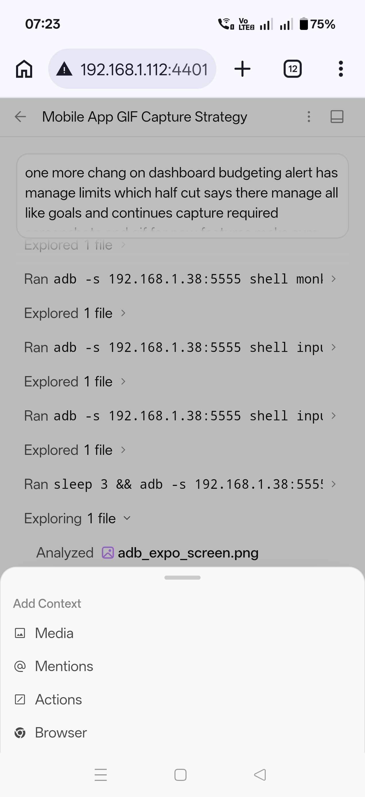
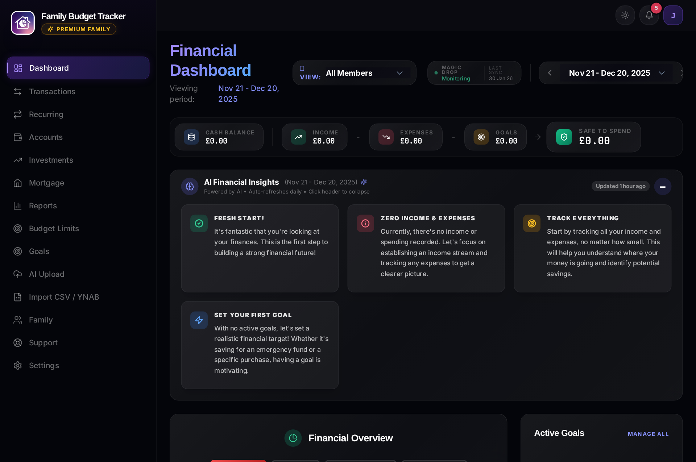
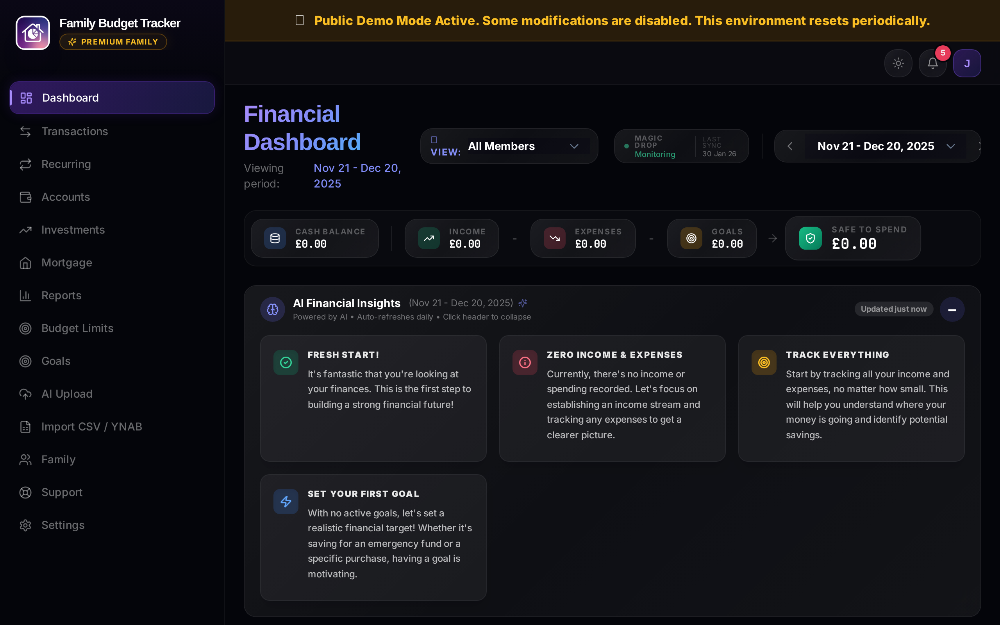
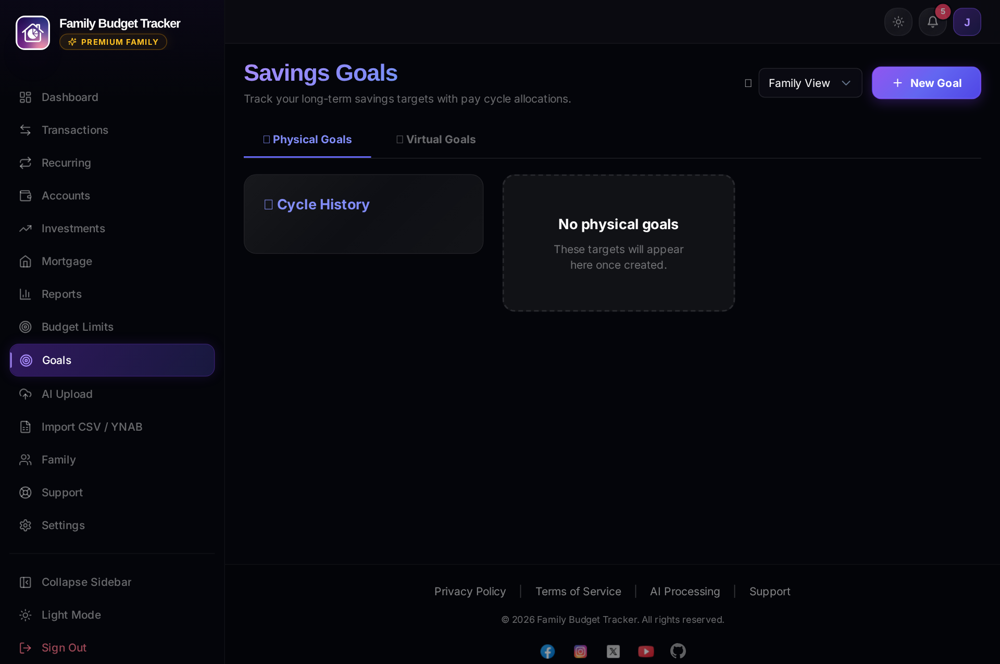

🚀 Getting Started with Family Budget Tracker
Welcome! This step-by-step onboarding guide walks you through setting up your pay cycle, adding accounts with precision, uploading your first statement, and activating the Android mobile app.

Step 1: Create Your Account
- Visit family-budget.getdigraw.com.
- Click "Sign Up" and select your preferred plan (Free Solo, Premium Solo, or Premium Family).
- Enter your email and a strong password (or continue with Google Single Sign-On).
- Confirm your email address if prompted, then log in.
Step 2: Configure Your Pay Cycle
Unlike traditional budgeting tools locked into calendar months, Family Budget Tracker calculates your Safe to Spend cash flow based on when you actually receive your income.
- Navigate to Settings → Pay Cycle Settings.
- Choose your pay frequency:
- Monthly: Select your monthly payday (e.g. 25th of each month).
- Bi-weekly: Every 14 days based on an anchor date.
- Weekly: Every 7 days based on your pay day of the week.
- Click "Save Settings". Your entire dashboard will now align with your real pay window.
Step 3: Add Your Bank & Credit Accounts
Precision at this step ensures 100% accurate cash flow and "Safe to Spend" metrics.
- Go to Accounts and click "+ Add Account".
- Enter the Account Name (e.g. "Barclays Main Current", "Amex Everyday CC").
- Select the Account Type (Bank Account, Credit Card, Savings, Investment, or Mortgage).
- Select your currency (GBP £, USD $, EUR €, INR ₹, etc.).
- Set Initial Balance & Date (CRITICAL RULE):
- Enter the exact closing balance from the day immediately preceding your uploaded statements.
- Example: If your statement begins on March 1st, set the Initial Balance Date to February 28th with the February 28th closing balance.
- Bank & Savings Accounts: Positive values (e.g.
2500.00). - Credit Cards: Negative values representing outstanding liability (e.g.
-450.00).
- Budgeting Account Checkbox: Check this for cash-flow accounts (Checking, Credit Cards). Leave unchecked for long-term investments, pensions, or mortgages so asset balances do not distort daily spendable cash.
Step 4: Upload Your First Statement (Vision AI)
Experience automated transaction extraction with mathematical reconciliation verification.

- Go to AI Statement Upload and select the target account.
- Drag & drop your PDF statement or image scan (up to 10 pages).
- Google Gemini vision AI extracts all transactions, dates, amounts, descriptions, and auto-categorizes them.
- Multi-Account Detection: If your PDF contains multiple accounts (e.g. Current Account + Linked Savings/ISA), the system automatically splits them into separate accounts.
- Reconciliation Score:
- 100% Score: Verified match! Opening Balance + Extracted Net Activity = Summary Closing Balance.
- Review detected transactions, adjust any categories if desired, and click "Confirm & Save" to commit to your ledger.
Step 5: Set Category Budget Limits
Keep your spending on track with visual progress bars and warning alerts.

- Go to Budget Limits and click "+ Add Limit".
- Select a category (e.g. "Groceries", "Dining Out", "Shopping") and set your monthly limit amount.
- Alert Logic: The system automatically fires notification alerts when you reach 90% and 100% of a category limit within the calendar month.
Step 6: Create Savings Goals (Physical vs. Virtual)
Earmark money toward your financial goals without losing track of your daily cash buffer.

- Physical Goals (Dedicated Account): Use when you physically transfer money into a separate savings account (e.g. Emergency Fund). Use the "Log Transfer" button when you transfer funds.
- Virtual Goals (Mental Envelopes): Earmark money that remains inside your checking account (e.g. Holiday Fund). Click "Quick Fund" to instantly allocate money and deduct it from your "Safe to Spend" without moving money between banks.
- Dashboard Pinning: Check the "Pin to Dashboard" toggle on any goal card to see a live progress bar on your main dashboard overview.
Step 7: Android Mobile App & Family Collaboration
Take Family Budget Tracker on the go and invite your partner or family members.
Need Assistance?
We're here to help! Email us at support@getdigraw.com.